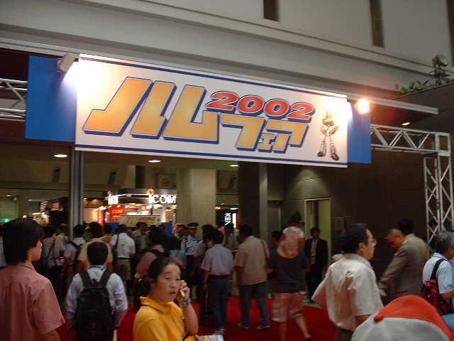
|
◎ Ham Fair 2002 開催= 2002年のハムフェアが8月24日(土)、25日(日)の両日、東京有明の東京ビッグサイトで開催された。 1999年から会場を神奈川県の"パシフィコ横浜"に移していたハムフェアは、 今年から再び東京有明に戻り、4年ぶりに"東京開催"となった。 今年から開催日程も週末の土、日曜日の2日間に短縮、会場も縮小されこじんまりした感じだったが、 例年通り、初日から賑わいをみせていた。 |
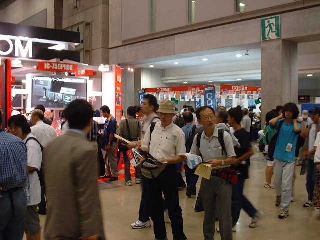
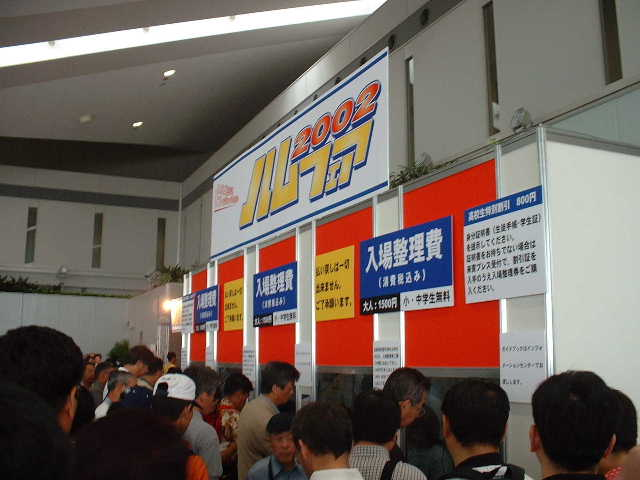
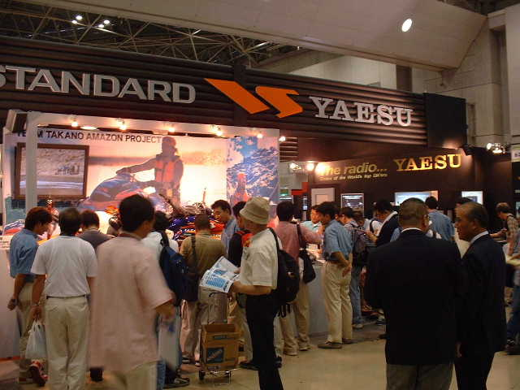
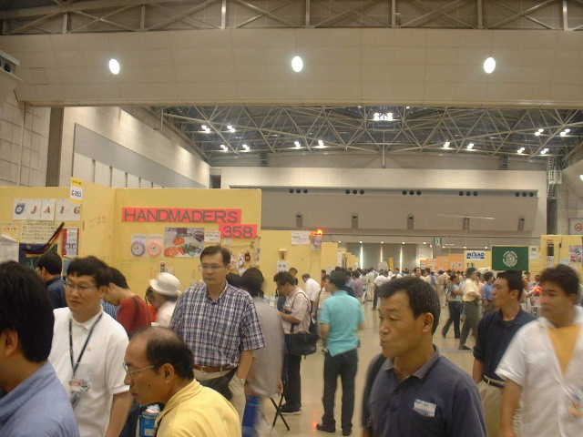
|
日程の短縮により、毎年ハムフェア会場で行なわれる"DXCCのフィルドチェック"も混雑が予想されたが、
今年は開催前日の23日(金)、臨時に巣鴨のJARL事務局でも行こなわれた。
この日の"フィルドチェック"も開始時間の午前10時前に30人近い申請者が訪れる盛況だった。 |
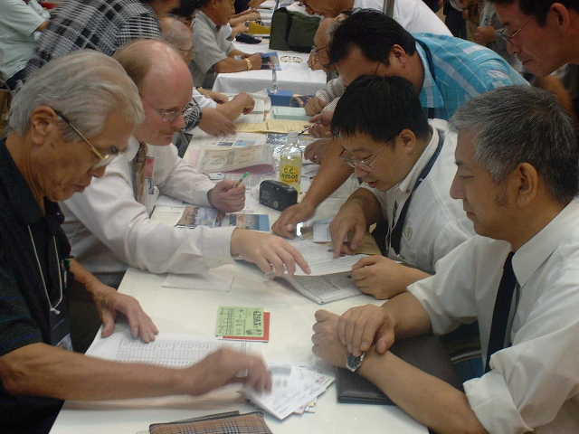
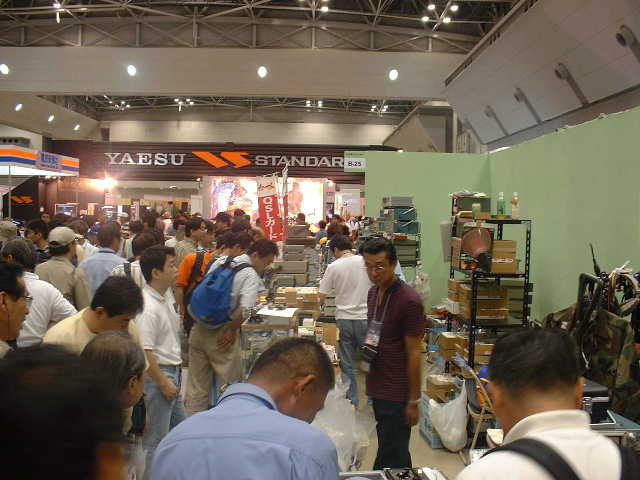
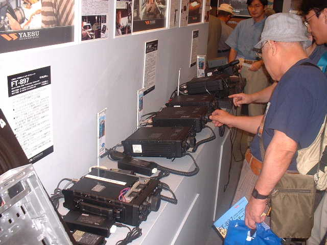
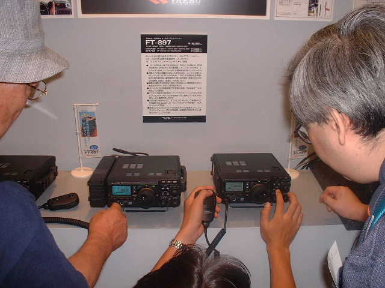
|
(株)スタンダードのブースでは"インターネットを利用した新しいアマチュア無線"と題してWIRES(ワイアーズ)のデモンストレーションを展開していた。
アマチュア無線の新時代を告げるこの新システムには多くのHAMが注目した。 |
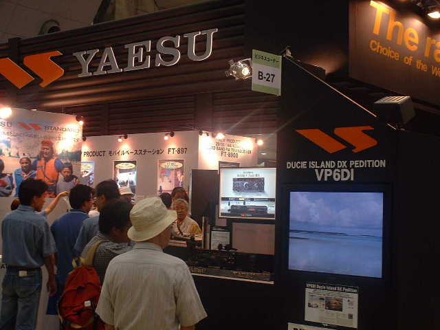
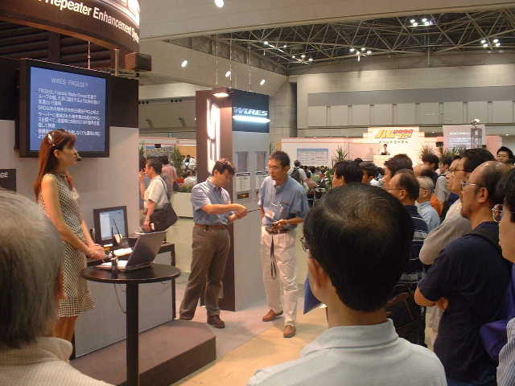
|
今年のハムフェア特別記念局はJARL創立75周年を記念して"8N1HAM"のコールサインが使われた。
また、外国局の来場者も"ゲストOP"として運用出来ることになった。 JARLの発表によると、初日の24日には17,000人、2日目の25日が11,000人、 2日間の合計でのべ28,000人の来場者があった。 なお、来年は8月23日(土)、24日(日)に、東京ビッグサイト西ホール１階で開催の予定。 |
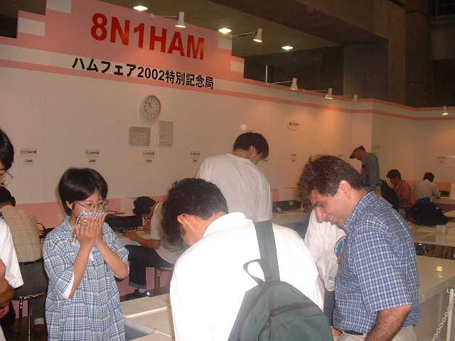
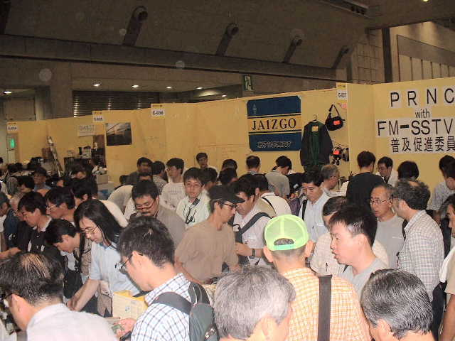
|
[ハムフェアの歴史] ハム・フェアの前身「第1回全日本ハムベンション」が1975年(昭和50年)、静岡県富士宮市で開催された。 会場は富士の裾野に広がる朝霧高原のグリンパーク。 1976年の第2回では特別記念局の8J2HAMも開局、交通の便は良くないものの自然を満喫出来る会場は多くの来場者で賑わった。 この実績を基礎に、1977年(昭和52年)「全日本ハムベンション」を引き継ぐ形で「第1回アマチュア無線フェスティバル」(ハムフェア)が、 JARLの主催で東京都中央区晴海の東京貿易センターで開催される事になった。 第1回は9月23日から25日までの開催期間にも関わらず、初日から多くの入場者がつめかけた。 フェスティバルの特別記念局・8J1HAMも開設、多くの来場者が運用した。 |
| Flash newsへ |